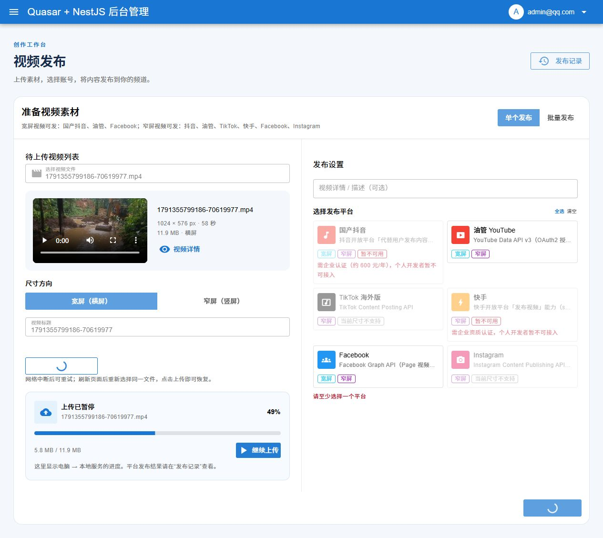
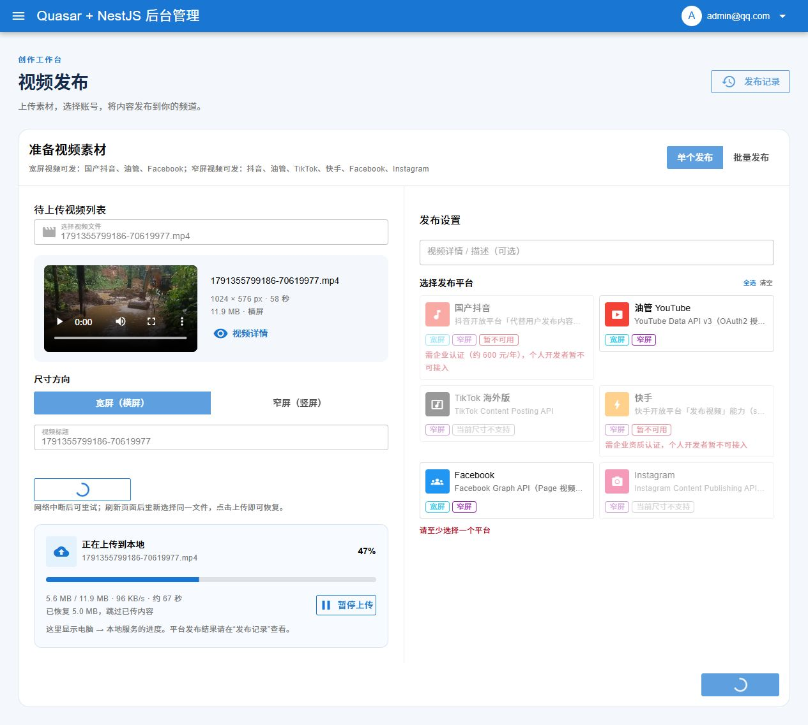
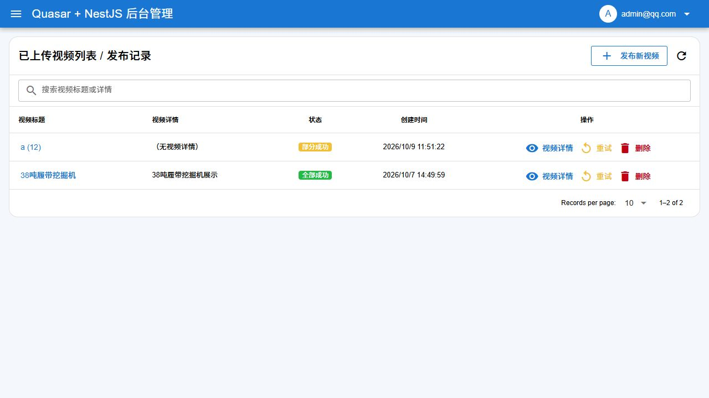

视频上传与断点续传
视频发布与发布记录已拆成独立页面。左侧导航默认隐藏，点击左上角菜单按钮可展开。
1. 选择视频素材
打开视频发布，选择单个或批量模式，选择电脑中的视频。单个文件最大 500 MB。预览区集中显示播放器、尺寸、大小和时长；为视频填写标题与描述。
2. 上传到本地
点击“仅上传到本地”可先保存素材，不会创建平台发布任务。系统先校验文件内容，再查找已保存的分片，显示上传字节数、百分比、速度与预计剩余时间。批量模式按文件顺序处理，进度区显示当前第几个文件。
3. 暂停、继续与刷新后恢复
- 上传过程中点击“暂停上传”，保持页面打开后点击“继续上传”。当前未完整接收的分片会重传，已经完成并校验过的分片会保留。
- 短暂网络故障会自动重试两次；仍失败时点击“重试本地上传”。合并视频时会显示独立的校验状态。
- 关闭或刷新页面后，重新打开视频发布，登录同一本地账号，重新选择原文件，点击“仅上传到本地”。系统根据内容恢复进度，已完成文件直接复用。
- 浏览器不能在刷新后自动重新读取本地文件；标题、描述、平台与账号选择需要重新确认。断点保存在当前电脑后端，迁移电脑或清理上传会话后不能沿用。

4. 检查恢复结果
“已恢复 …，跳过已传内容”说明已识别服务端分片。达到 100% 并显示“本地上传完成”后，素材完整保存在本地服务。

5. 提交发布并查看记录
选择发布平台、目标账号，以及可选的 YouTube 播放列表，点击“上传并发布”或“批量发布”。本地已上传的视频会复用。提交后打开已上传视频列表 / 发布记录，查看每个平台的目标账号、处理状态和详情。

维护说明
分片按本地登录用户隔离，存放在后端私有目录 .upload-sessions/，合并后的视频在 uploads/videos/。这两类运行数据均被 Git 忽略。请保留后端目录以继续未完成的上传；不要把运行时分片或凭证加入教程。